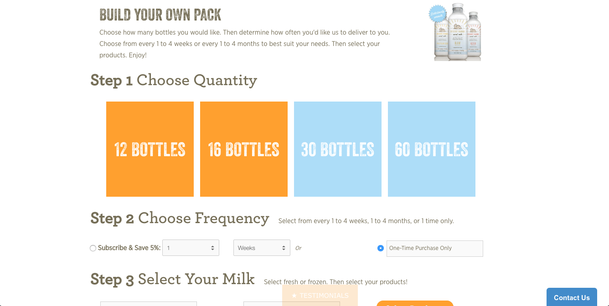
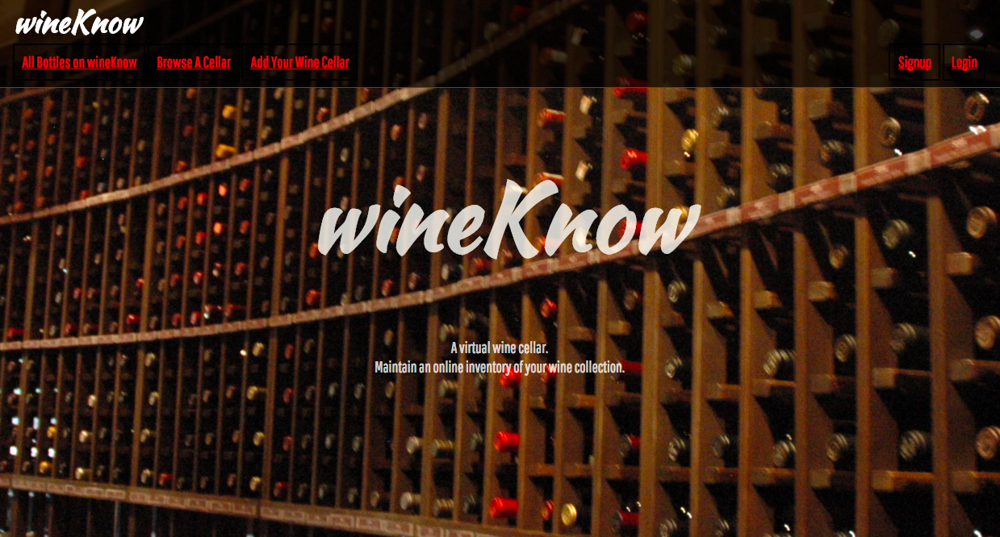
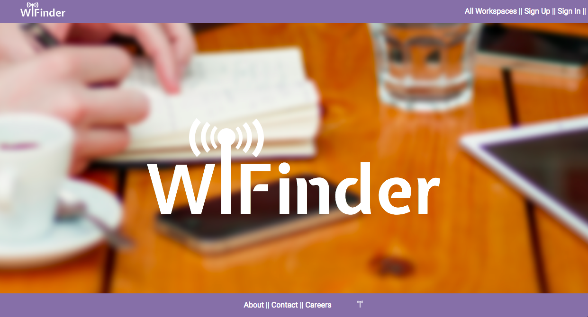
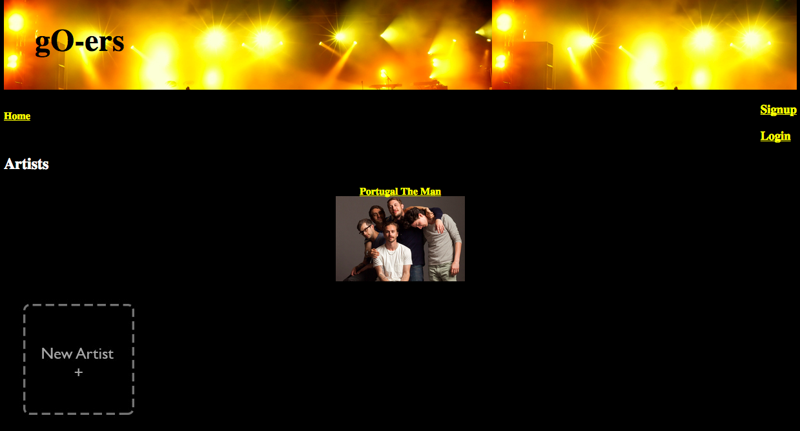

www.desertfarms.com/products/pack
xThis was one of the more complex sites I have worked on for a client. They wanted to create a unique shopping experience for their customers. The idea was that they would be able to build a combination pack of any of their camel milks. The end result is a clean and custom build your own bundle page. This turned into something that clients frequently came to us for.

wineknow.herokuapp.com
xThis was my final project for the WDI program at General Assembly. My idea for this project was to allow individual users to create a virtual wine cellar in order to keep an online inventory for the collection. After creating an accout, the user would create their virtual wine cellar by naming it, and adding an image. Then they are able to add and remove bottles as their collection grows. This application helped solidify my understanding of Ruby on Rails after working with it on several other projects.

wifinder-app.herokuapp.com
xThis was my first time working on a group project for this class. It was also my first time working with a UX designer. Between the four developers we decided to break into a pair on the front-end and a pair working on the back-end. I was on the front-end team and got to collaborate closely with our UX designer, which I found particularly rewarding because I have a great interest in design as well. I also enjoyed having two people working on the front end so that we could pair program. I learned a lot during this project, mainly about working with a group.We used Git to manage our workflow, with everyone being able to push as a collaborator since we were all working in different areas.

goers-app.herokuapp.com
xThis was my first attempt at a Ruby on Rails app. I really learned a lot about Ruby on Rails during this project. From setting the app up from scratch, to MVC. I also learned a lot about time management and planning.